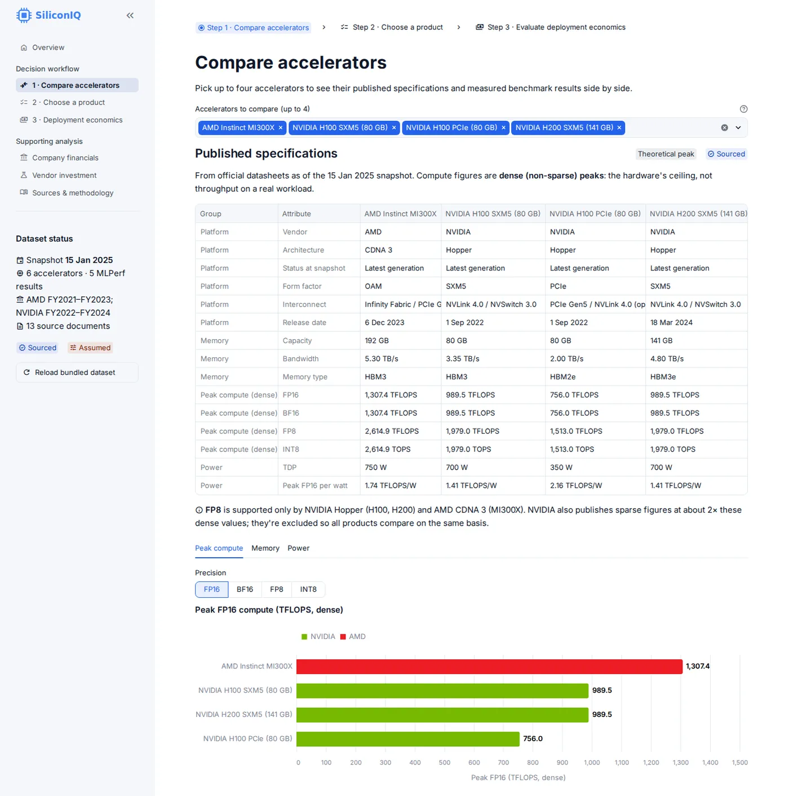
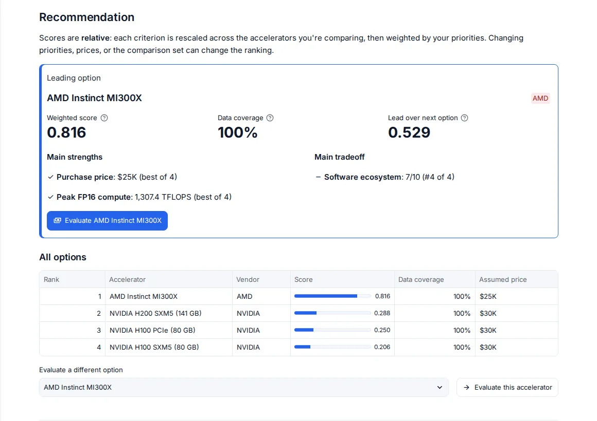
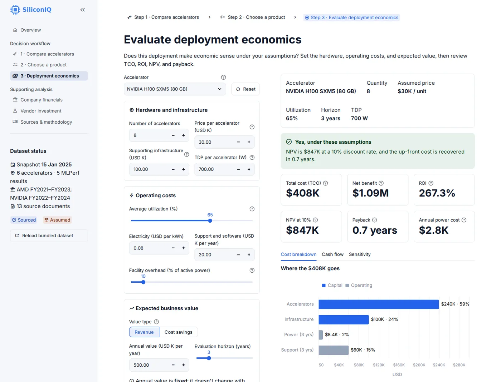
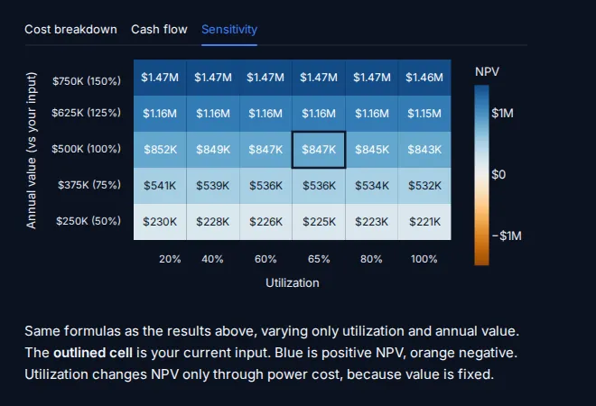
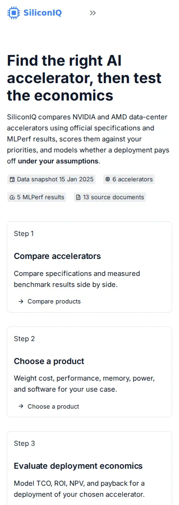

Case study · Applied analytics
SiliconIQ
AI accelerator strategy & investment analytics
An interactive application for comparing NVIDIA and AMD accelerators, examining vendor financials, scoring options against customer priorities, and modeling deployment economics under explicit assumptions.
- Role
- Solo project
- Timeline
- Aug 2026 – present
- Stack
- Python, pandas, SQLite, Streamlit
- Status
- Working prototype, public demo

Problem and intended user
Engineers, product managers, and analysts evaluating data-center AI hardware have to combine three kinds of information that are rarely in one place, and each is easy to misuse:
- Theoretical specifications such as peak TFLOPS, memory capacity, and bandwidth, which describe a ceiling rather than real throughput.
- Measured benchmarks, which are only comparable when workload, precision, system size, and benchmark version match.
- Economics: purchase price, utilization, power, and expected business value, none of which vendors publish in a usable form.
The question SiliconIQ helps answer: which accelerator fits my priorities, and does deploying it make economic sense under my assumptions?
Why it matters to a customer
Specifications only matter through the decisions they drive. Memory capacity determines whether a model fits on fewer devices. Measured throughput, not peak compute, sets how much work a system does. TDP becomes power and cooling cost over the life of a deployment, and the assumed price drives capital cost and payback. SiliconIQ keeps those links visible so a recommendation can be defended, and changed, when an assumption changes.
What I built and my role
I designed and built SiliconIQ as a solo project. I defined the intended user and the decision workflow, chose the data sources and the rules for how they may be compared, specified the scoring and financial models, and set the standard that every number be labeled as sourced or assumed.
I built the application with AI-assisted development using Claude Code, reviewing the generated code, writing the requirements it had to meet, and verifying behavior with automated tests and end-to-end checks of every page.
Supporting features
- Company financial comparisons from 10-K filings: revenue, growth, margins, R&D, and disclosed segments.
- A hypothetical vendor investment model with downside, base, and upside scenarios.
- A sources and methodology page listing every document, comparability rule, and formula.
- A one-click Excel export containing the dataset and whichever analyses were run in the session.
Main user workflow
- Compare accelerators. Pick up to four products and review a grouped specification table, aligned comparison charts, and a separate section of measured MLPerf results that shows workload, precision, system size, units, and comparability next to each result.
- Set customer priorities. Choose a profile (startup inference, enterprise production, or research training), weight five criteria, and enter price assumptions. A weighted decision matrix names the leading option with its score, data coverage, main strengths, and main tradeoff, and warns when the result is a close call.
- Evaluate deployment economics. Enter quantity, price, infrastructure, utilization, power, support, and expected annual value. The app returns a plain-language verdict with total cost of ownership, ROI, NPV, and payback, plus a cost breakdown, cash-flow chart, and an NPV sensitivity grid across utilization and annual value.
Selections and assumptions carry between steps, and inputs persist when moving between pages.
Data sources and assumptions
The bundled dataset is a fixed snapshot assembled on 15 January 2025. Four kinds of values appear in the app, and they are never mixed:
| Kind | Source | Coverage |
|---|---|---|
| Reported financials | SEC Form 10-K filings (6) | NVIDIA FY2022–FY2024, AMD FY2021–FY2023 |
| Theoretical specs | Official product datasheets | 6 accelerators: H100 SXM5, H100 PCIe, H200 SXM5, A100 SXM4, MI300X, MI250X (dense, non-sparse figures) |
| Measured benchmarks | MLPerf Inference submissions | 5 results across v4.0 and v3.1 (Llama2-70B, ResNet-50) |
| Hypothetical assumptions | Entered by the user | Prices, utilization, business value, discount rate, and every vendor-model input |
No hardware prices are stored. The software-ecosystem score used in the decision matrix is a qualitative 0–10 judgment, and it is labeled that way.
Example: peak specs vs. measured results
On MLPerf Inference v4.0 Llama2-70B (FP16, 8-accelerator systems), the NVIDIA H100 SXM5 delivered 51,705 tokens/s against 44,560 for the AMD Instinct MI300X, about 16% more, even though the MI300X has the higher peak FP16 specification (1,307 vs 990 TFLOPS). A tool that ranked on peak specs alone would point the other way.
Technical architecture
- Data layer: SQLite with a SQL schema and views for financial ratios, a product catalog, and growth calculations. An idempotent ingestion script builds the database from the bundled dataset on first run.
- Query layer: SQL queries returning pandas DataFrames.
- Model layer: pure Python modules with no UI dependency for financial ratios, NPV, IRR, payback, ROI, total cost of ownership, the vendor investment model, weighted scoring, and sensitivity grids.
- Interface: a multipage Streamlit app with forms for batched inputs, session-persisted widgets, and Altair charts that follow light and dark themes.
- Export: an openpyxl workbook generated when the user clicks download.
Keeping the math out of the interface means each formula, and the way each page feeds inputs into it, is covered by unit tests independently of the UI. The project has 77 passing tests.
Engineering and product tradeoffs
Relative, transparent scoring
Each criterion is min-max normalized across the accelerators being compared. That makes scores easy to explain, but relative: adding or removing a product changes every score. The app says so next to the result rather than presenting the number as absolute.
Missing data is penalized, not hidden
A product with no value for a criterion scores zero on it, and a data-coverage figure shows how complete each product’s data is. Imputing an average would have produced cleaner rankings that were harder to trust.
No stored prices
Every price is a user assumption. That limits out-of-the-box answers but avoids presenting guesses as vendor-reported figures.
A fixed snapshot instead of live data
A bundled, sourced dataset makes results reproducible and every value traceable to a document, at the cost of aging. The in-app reload action rebuilds the database from that snapshot and says plainly that it does not fetch new data.
A deliberately simple value and power model
Annual business value is fixed and does not scale with utilization; only power cost does. Power is modeled as TDP × utilization, which ignores idle draw. Both simplifications are stated next to the results instead of being buried.
Current capabilities and limitations
Works today
- The full three-step workflow, with selections carried between steps and inputs kept across page changes.
- Company financials, the hypothetical vendor model, sources and methodology, and Excel export.
- Light and dark themes and layouts that work down to phone width.
Limitations
- It is a portfolio prototype with a public demo. It has no production users and uses no proprietary vendor data.
- The dataset stops at its January 2025 snapshot, so newer products and fiscal years are missing.
- The H100 PCIe and H200 have no MLPerf results in the dataset, so measured comparisons cover only some products.
- The cost model covers a single deployment, not cluster-level networking.
- The free hosting tier sleeps after inactivity, so the first visit can take about 30 seconds to wake.
Next steps
Import financials from SEC XBRL data automatically, add other accelerators such as Intel Gaudi and Google TPU under the same sourcing rules, and extend the cost model to multi-node clusters.
Screenshots




